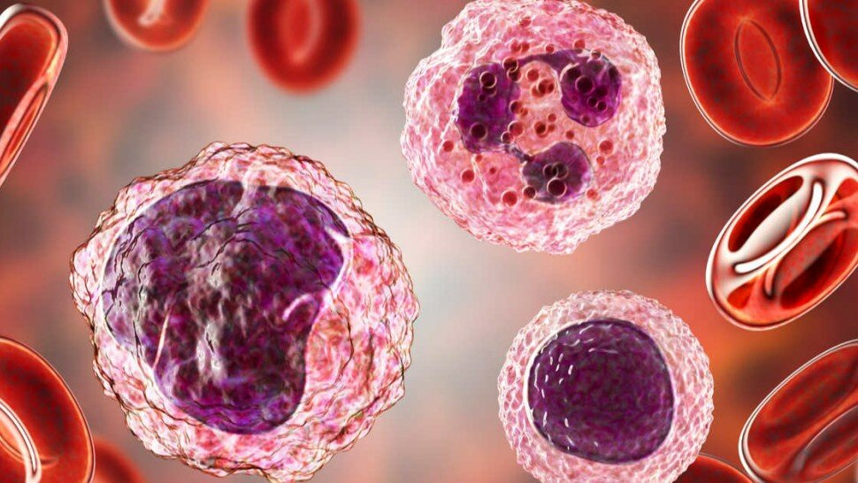

Monocytes hauts : interprétation et causes
Les monocytes sont un type de globules blancs. Leur rôle est d'aider à combattre les bactéries, les virus et autres infections dans le corps humain. Avec d'autres types de globules blancs, les monocytes sont un élément clé de la réponse immunitaire. En plus des plaquettes et du plasma, le sang contient des globules rouges et blancs. Environ 1% seulement de notre sang comprend des globules blancs, mais ils jouent un rôle énorme dans la protection contre la maladie. Il existe cinq types de globules blancs, chacun ayant un but précis.
La moelle osseuse produit des monocytes et les libère dans la circulation sanguine. Une fois qu'ils atteignent les tissus du corps humain, ils sont appelés macrophages. Là, ils isolent et engloutissent les germes et autres micro-organismes nuisibles. Ils éliminent également les cellules mortes et contribuent à la réponse immunitaire.
En biologie, les monocytes sont une variété de leucocytes mononucléaires (qui n'ont qu'un seul noyau) de grande taille, provenant de précurseurs, les monoblastes (cellules de la moelle osseuse). Les monocytes quittent la moelle osseuse et pénètrent dans la circulation sanguine et se différencient en macrophages lorsqu'ils infiltrent un tissu (foie, poumons, ganglions lymphatiques, rate...).

Sommaire
- Définition des leucocytes et des monocytes
- Monocytes : des leucocytes mononucléaires de grande taille
- Formule leucocytaire : une analyse essentielle au diagnostic de nombreuses pathologies
- Monocytes bas et monocytes élevés (hauts)
- Maladies des monocytes : pourquoi les monocytes sont élevés ou trop bas ?
- Sources
Définition des leucocytes et des monocytes

Présents dans le sang et évoluant dans les tissus biologiques, les monocytes font partie des leucocytes (globules blancs mononucléaire ou polynucléaire) et participent aux défenses immunitaires de l’organisme contre des substances étrangères (agents pathogènes). Ainsi, ces globules blancs, qui représentent jusqu’à 10% des globules blancs circulant dans le sang, sont en charge de détruire les virus et bactéries et sont essentiels pour le système immunitaire.
Cependant, une augmentation du nombre des monocytes dans le sang est caractéristique de divers états infectieux. De la sorte, un taux de monocytes en hausse dans le sang, appelée « monocytose » (maladie des monocytes) [1], peut être lié à différentes maladies bénignes ou malignes.
Une monocytose est dans la grande majorité des cas réactionnelle et plus rarement liée à une une hémopathie maligne ou "cancer du sang".
Une augmentation réactionnelle du taux de monocytes
La monocytose accompagne souvent les états infectieux (infections bactériennes, parasitaires...) : tuberculose, brucellose, fièvre typhoïde, listériose, endocardites bactériennes, paludisme, toxoplasmose, leishmaniose et certaines viroses des nourrissons et des jeunes enfants [2].
Elle est observée dans les états inflammatoires chroniques des maladies auto-immunes : la polyarthrite rhumatoïde, la rectocolite hémorragique (RCH), le lupus érythémateux disséminé, la maladie de Crohn, la sarcoïdose (ou maladie de Besnier-Boeck-Schaumann…) ou de certains cancers ovaire, estomac, sein,..).
Hémopathies malignes
Une monocytose stable circulante stable ≥ 1 × 109/L depuis au moins 3 mois caractérise souvent une néoplasie myéloproliférative (NMP) et notamment la Leucémie Myélomonocytaire Chronique [3].
Différentes formes de leucémies (leucémies aiguës, etc.) [4] peuvent être associées à une monocytose.
Monocytes : des leucocytes mononucléaires de grande taille
Formule leucocytaire : une analyse essentielle au diagnostic de nombreuses pathologies
Monocytes bas et monocytes élevés (hauts)

Quel est le taux normal de monocytes ? Comment interpréter une prise de sang ?
Les globules blancs vivent dans un équilibre délicat et lorsque certains ont un niveau élevé, d’autres peuvent être d’un niveau bas. Ainsi, l’analyse unique des monocytes peut ne pas donner une image complète. La mesure du nombre et le calcul des pourcentages de chacun des types de globules blancs font partie du test sanguin "formule sanguine complète".
Les monocytes en circulation dans le sang représentent généralement un assez faible nombre des globules blancs.
Les valeurs de la numération des différents types de leucocytes doivent être fournies sous forme de valeurs absolues et non plus sous forme de pourcentages (sans intérêt clinique et source de confusion).
Remarque
Les normes ou valeurs de référence des différents leucocytes [11] sont :
- Neutrophiles : 1.5 - 7.0 X 109 /L
- Eosinophiles : 0.04 - 0.4 X 109 /L
- Basophiles : 0.02 - 0.1 X 109 /L
- Lymphocytes : 1.5 - 4.0 X 109 /L
- Monocytes : 0.2 - 0.8 X 109 /L
Quelle est la cause de l'augmentation des globules blancs ?
Le résultat d’une numération de la formule sanguine est susceptible d'augmenter en réponse à un état de stress aigu, des troubles sanguins, une réponse immunitaire, une infection ou une inflammation.
Pourquoi les monocytes baissent ? (symptômes du trouble...)
Dans le cas d’une diminution du taux de monocytes, l’origine peut provenir d’une infection du sang, d’un trouble de la moelle osseuse ou dans le cas d’une administration de corticoïdes.
Maladies des monocytes : pourquoi les monocytes sont élevés ou trop bas ?
Sources
- « Maladies des monocytes ». (Monocytose : augmentation de la taille du nombre de monocytes dans le sang). Mary Territo , MD, David Geffen, School of Medicine at UCLA (USA). Dernière révision totale janv. 2020. https://www.msdmanuals.com/fr/accueil/troubles-du-sang/maladies-des-globules-blancs/maladies-des-monocytes
- « Monocytose/Monocytopénie. » Document. (Description : Monocytose sanguine, Monocytose réactionnelle (transitoire), Monocytose et hémopathies, Monocytopénie.) http://www.chu-rouen.fr/page/DOC_204013
- « Leucémie myélomonocytaire chronique : diagnostic et thérapeutique. » Kaoutar Hafraoui, Bernard De Prijck, Yves Beguin. Rev Med Suisse 2013; volume 9. 1512-1517. https://www.revmed.ch/RMS/2013/RMS-N-395/Leucemie-myelomonocytaire-chronique-diagnostic-et-therapeutique
- « Leucémies aiguës de l'enfant. Les nouveaux traitements. » Le Guide Santé. Actualités Médecine. 30 sept. 2020. https://www.le-guide-sante.org/actualite/619-leucemies-aigues-de-lenfant.html
- « Chapitre 6 - Les populations cellulaires « libres ». 6.2.1.1 Une fois formés dans la moelle osseuse, les monocytes passent dans le sang. (Monocytes dans la moelle et dans le sang) » http://www.chups.jussieu.fr/polys/histo/histoP1/POLY.Chp.6.2.html
- « Que fait la moelle osseuse ? » Les monocytes dans la moelle. Page 15. https://www.mds-foundation.org/wp-content/uploads/2019/05/Blood-Marrow-Booklet_French_Online_5.8.19.pdf
- Shannon Cohen. « Identification et caractérisation fonctionnelle de sous-populations monocytaires circulantes chez l’homme. » Médecine humaine et pathologie. Université Sorbonne Paris Cité, 2018. Français. NNT : 2018USPCC241ff. https://tel.archives-ouvertes.fr/tel-02482493/document
- Antal-Szalmas P, Strijp JA, Weersink AJ, Verhoef J, Van Kessel KP. « Quantitation of surface CD14 on human monocytes and neutrophils. » J Leukoc Biol. 1997 Jun;61(6):721-8. doi: 10.1002/jlb.61.6.721. PMID: 9201263. https://pubmed.ncbi.nlm.nih.gov/9201263/
- Romee R, Foley B, Lenvik T, et al. « NK cell CD16 surface expression and function is regulated by a disintegrin and metalloprotease-17 (ADAM17). » Blood. 2013;121(18):3599-3608. doi:10.1182/blood-2012-04-425397. https://www.ncbi.nlm.nih.gov/pmc/articles/PMC3643761
- « Les lipides et les acides gras. » Le Guide Santé. Actualité Nutrition. 07 sept. 2020. https://www.le-guide-sante.org/actualite/611-les-lipides-et-acides-gras.html
- « Lecture critique de l’hémogramme : valeurs seuils à reconnaître comme probablement pathologiques et principales variations non pathologiques. » Haute Autorité de Santé. ANAES/Service des Références Médicales/Septembre 1997. https://www.has-sante.fr/upload/docs/application/pdf/Hemogram.pdf
- « Histiocytose à cellules de Langerhans. » Tumeurs malignes rares pp 99-106. https://link.springer.com/chapter/10.1007%2F978-2-287-72070-3_17
- Monocytopénie. Mary Territo , MD, David Geffen, School of Medicine at UCLA (USA). Dernière révision totale janv. 2020. https://www.msdmanuals.com/fr/professional/hématologie-et-oncologie/leucopénie/monocytopénie